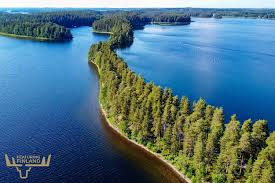

The trip usually starts in the crack of dawn, with a quick breakfast and a huge cup of coffee. We pack up the car and head to the summer cottage that is about 45 minutes outside of the Finnish city Lahti.
The trip, when the weather allows, always starts with the lake. When we get to the cottage we strip down to our swimwear and sprint right to the cold and refreshing lake.
Another big aspect of the summer cottagge is the sauna. We go to the sauna every night for about 45 minutes to one hour. Many days we would go from the sauna to the lake to help us relax and then we would drink beers or long drinks during the breaks from the saunas.
Finally the last big aspect for the family is food. We BBQ every day, and that consists of sausages, steaks and vegetables. Sometimes we would eat salads, but that is very rare.